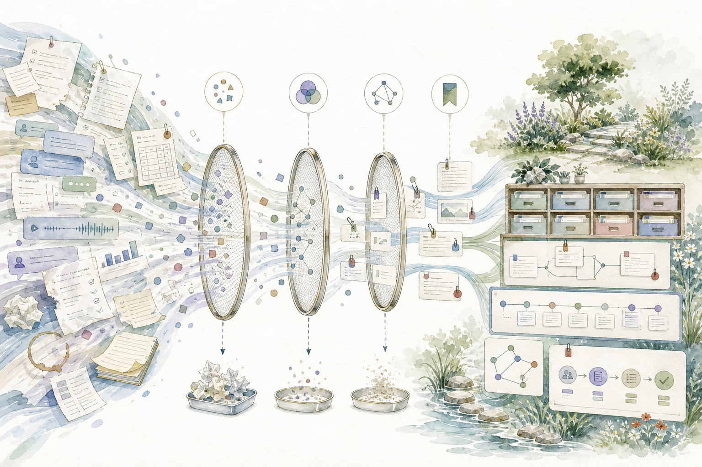
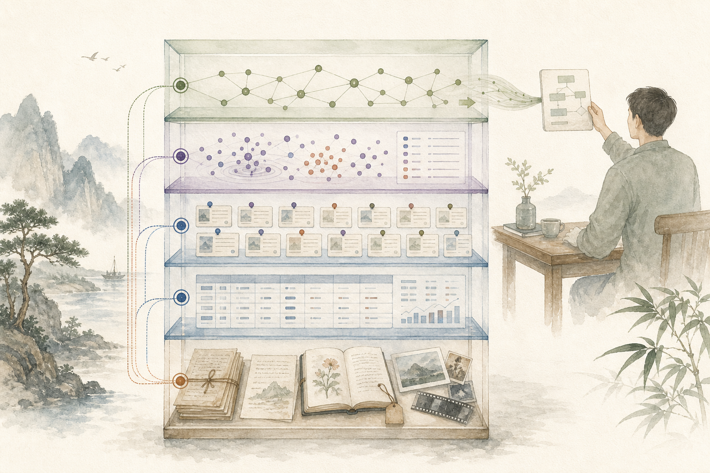

原始资料
录音、PDF、网页快照、图片与原始表格。只追加、少覆盖，保留校验值和版本。
文件系统 / 对象存储 / 飞书云文档从杂乱信息到可复用认知
AI 的价值不是替你制造更多摘要，而是把来源、时间、条件和结论连在一起，让重要信息在需要时找得到、信得过、能继续行动。

一条完整主线
不是“一键上传后问答”，而是一条可检查、可回滚的流水线。
不要只存摘要
没有出处和适用条件的结论，只是容易传播的文字。
一句能被验证、引用或用于决策的话。
数据该存在哪里
不要把所有内容都塞进向量数据库。搜索索引不是事实本身。

录音、PDF、网页快照、图片与原始表格。只追加、少覆盖，保留校验值和版本。
文件系统 / 对象存储 / 飞书云文档把人物、日期、金额、事件和指标整理成稳定字段，便于过滤、统计和回溯。
CSV / Parquet / DuckDB / SQLite / 多维表格记录来源、权限、版本、有效期、处理状态与数据血缘。
SQLite / PostgreSQL / 数据目录向量负责“意思相近”，关键词负责专有名词与精确编号，两者混合更稳。
Qdrant + 全文检索；索引可删除重建只有当问题需要跨文档关系、全局主题或多跳推理时再构建，避免过度工程。
实体、关系、社区摘要；不是所有知识库都需要AI 去噪不是“删得多”
先做可解释的确定性处理，再让模型做语义判断。
论文给出的设计信号
研究支持分层检索、时间意识、引用和可拒答，而不是无限延长提示词。
相关信息位于长上下文中部时，模型表现会下降。知识库应先检索，再提供少量关键证据。
Lost in the Middle ↗RAPTOR 把片段递归聚类和摘要成树，说明细节检索与全局理解需要不同粒度。
RAPTOR ↗GraphRAG 从实体关系建立社区摘要，适合回答跨大量文档的主题与整体问题。
GraphRAG ↗LongMemEval 把长期记忆拆为信息提取、多会话、时间、更新和拒答，提醒我们不能只做相似度搜索。
LongMemEval ↗开源组件 · 截至 2026-07-23 核验
以下项目均链接到官方仓库；部署前仍需核验最新许可证、版本与数据边界。
| 环节 | 项目 | 适合做什么 | 注意事项 |
|---|---|---|---|
| 解析 | Docling ↗MIT | 本地解析 PDF、Office、网页、表格、公式与 OCR，输出 Markdown / JSON。 | 先验证复杂表格和扫描件质量；原文件仍要保留。 |
| 检索工作台 | RAGFlow ↗Apache-2.0 | 文档理解、切块可视化、检索和引用，适合团队做完整 RAG 流程。 | 运维成本高于个人知识库；先用真实问题做小规模评估。 |
| 向量索引 | Qdrant ↗Apache-2.0 | 语义检索、过滤与混合搜索；适合资料量和并发增长后使用。 | 向量不是事实库，必须保留 source_id 和定位信息。 |
| 全局关系 | Microsoft GraphRAG ↗MIT | 从非结构化材料抽取实体关系并建立社区摘要。 | 索引成本可能较高；官方也建议先从小数据集开始。 |
完成标准
一套知识库只有在真实问题上可靠，才算完成沉淀。
每个结论能回到文件、页码或时间戳。
过期内容有状态，更新不会与旧版本混成一条。
同一事实合并展示，但保留多个独立来源。
不强行合并矛盾，明确列出差异和待确认项。
检索结果继承源数据权限，敏感内容不越界。
证据不足时说不知道，不用流畅文字填空。
普通人的最小可行方案
不必先搭建复杂系统。选一个你经常反复查找的主题，例如客户资料、会议记录或行业研究。
建立“原始资料”目录，不让 AI 覆盖源文件。
用日期、主题、来源命名，并在表格登记链接和权限。
要求 AI 输出结论、证据定位、适用条件、状态和下一步。
看能否找对来源、识别冲突、在证据不足时拒答。
保存有效的输入格式、处理步骤、质量检查和输出模板。